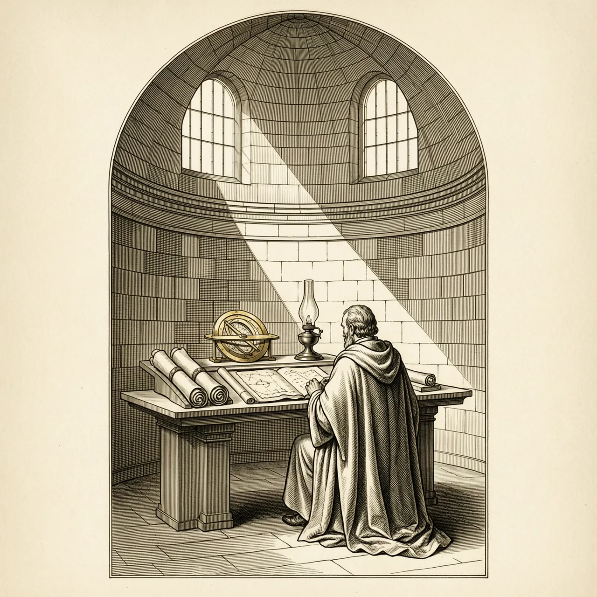
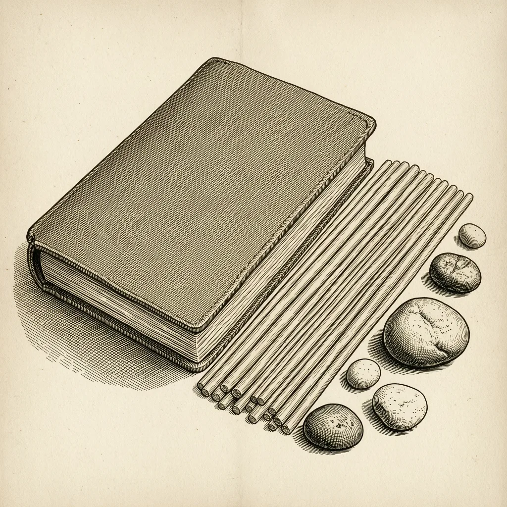

他把方程变成独立学科，名字今天成了「算法」

当时欧洲学者认为未知量问题必须落到几何图形上才可靠，画图才算正当推理；罗马数字又让纸面多步运算几乎不可能。
方程其实是能纯靠运算规则摆弄的独立对象：「还原」挪项、「对消」清项，配上十进位值制，几条规则就取代了半页图形。
9世纪中叶的一本巴格达小册子，只列六种标准型方程，从设题到求解不借助任何几何图形。它就是《还原与对消计算概要》，今天英语里的algebra（代数）一词，正从这本小册子的书名长回来。
在花拉子密之前，地中海世界的未知量问题大多包在几何图形里，解一道题往往要画出线段长度来说理。他的做法完全不同：先把应用题归成标准型方程，再用两种操作挪移它——「还原」把被减去的项补到等号另一边，「对消」把两边的同类项各自抵消。方程本身成了研究的对象，不再需要图形的支撑，他也因此被称为代数的创造者。
这套办法能长在9世纪的巴格达，靠两样东西。一是印度十进位值制，没有位值记数，纸面上的多步运算根本做不动；二是智慧之家的译书与讲学氛围，分家产、做买卖、量土地一类的实务问题摆在桌面上要答案。他把未知量叫「东西」「硬币」，也叫植物的「根」——最后这个词活到今天，我们解方程仍说「求根」。
12世纪，他的书被译成拉丁文，欧洲语言里留下了两个词：书名中的al-jabr变成algebra，他名字的拉丁转写变成algorism，再演成algorithm。一个来自书页，一个本是署名，看起来毫无关系的两个词其实指向同一个人。我们今天每天说用算法，里面藏着一位巴格达学者的名字。
